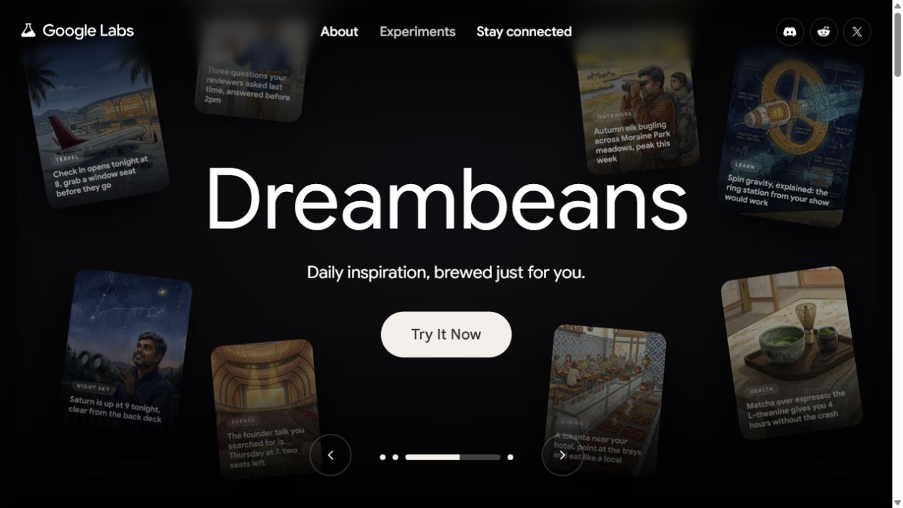
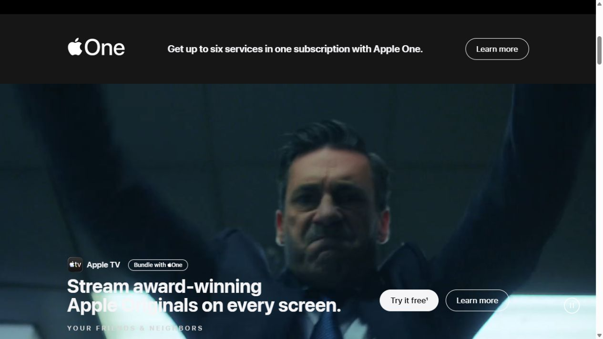
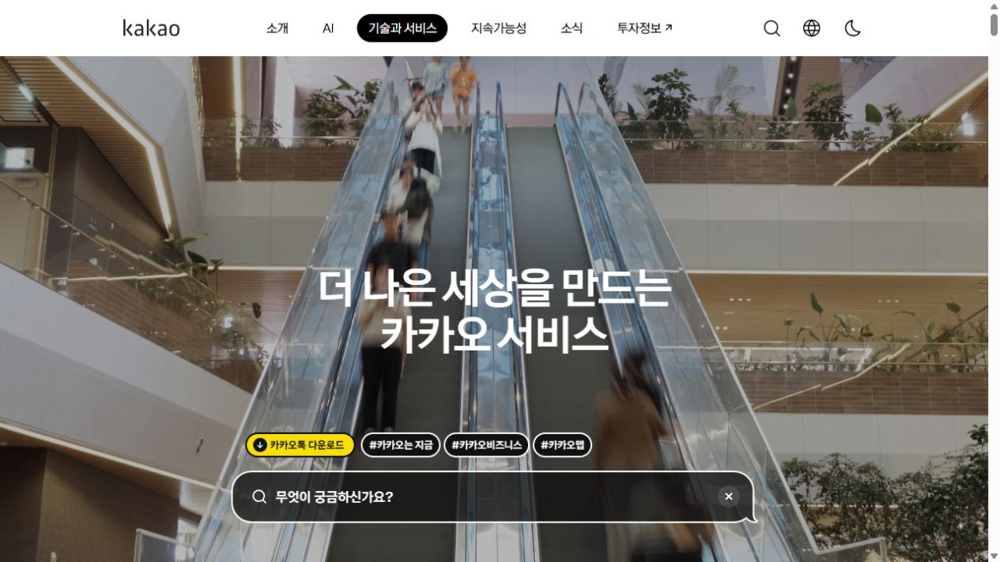
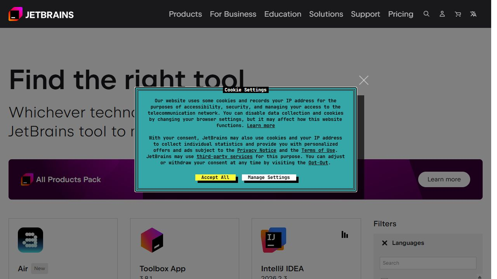

01 / 추천 · 비주얼 방향Google Labs ↗대표 서비스를 큰 비주얼로 보여주고, 아래에서 여러 실험과 도구를 탐색하는 구조.코들 적용: 수업 화면과 학생 결과물을 첫 화면의 주인공으로. 서비스 이름보다 어떤 경험인지 먼저 전달.
02 / 추천 · 서비스별 표현Apple Services ↗여러 서비스를 하나의 브랜드 안에 묶되, 각 서비스는 큰 이미지와 짧은 메시지로 소개.코들 적용: 플랫폼·콘텐츠·교과서·캠프·해커톤을 각자 다른 장면으로 보여주되 글자와 버튼 규칙은 통일.
03 / 국문 구성 참고카카오 기술과 서비스 ↗생활 장면을 보여주는 영상과 한국어 메시지로 시작하고 개별 서비스로 연결.코들 적용: 교사와 학생이 실제로 쓰는 장면, 짧고 구체적인 한국어 문장 참고.
04 / 탐색 구조 참고JetBrains Products ↗제품 목록과 필터를 중심으로 목적에 맞는 도구를 고르는 제품 허브.코들 적용: 서비스가 늘어날 때 분류와 바로가기 구조 참고. 시각적인 방향보다는 정보 정리에 적합.